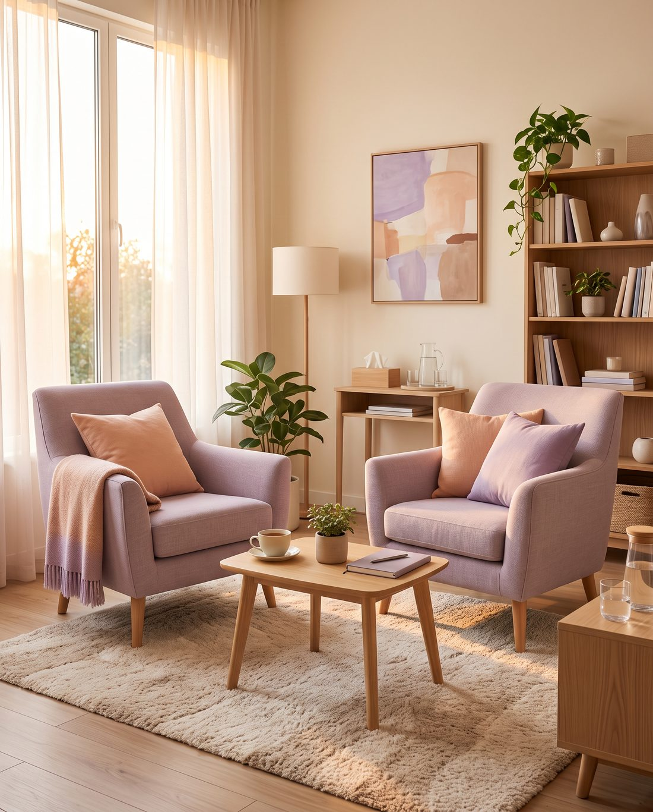

Aquí puedes soltar lo que llevas tiempo cargando. Te escuchamos sin prisas, sin juicios y con el rigor de un equipo clínico especializado.

Psicóloga sanitaria en Zaragoza, especializada en terapias de tercera generación o contextuales.
Desde 2013 acompaño a personas que sienten que algo pesa más de la cuenta. En mi consulta encontrarás un lugar tranquilo para explorar lo que te pasa, entenderlo y empezar a cuidarte de verdad.
No trabajo con recetas. Cada proceso se diseña para ti, respetando tu ritmo y lo que quieres conseguir.
— MarianaCon respeto, sin prisas y sin miedo a ser juzgado. Ese es el punto de partida de todo lo que hacemos.
En Luca todos trabajamos con el mismo enfoque clínico: estructurado, basado en la evidencia y centrado en entender a fondo tu malestar y en ayudarte a regular tus emociones.
El resultado es un proceso coherente de principio a fin, adaptado a ti y guiado siempre por una dirección clínica clara.
Conoce al equipoCada profesional aporta su especialidad. La dirección clínica garantiza la calidad y la continuidad de tu proceso.
Psicoterapia especializada para cada etapa de la vida.
Personalizadas y basadas en la evidencia. Tras la primera sesión, elegimos contigo la más adecuada.
Ayuda a procesar recuerdos y emociones que se quedaron atascados, mediante movimientos oculares. Especialmente indicada para el trauma y el estrés postraumático.
Ver más →Une la terapia cognitivo-conductual con la aceptación y el mindfulness para regular las emociones más intensas.
Ver más →Para entender qué necesitan tus emociones más difíciles y aprender a comunicarlas mejor.
Ver más →Una forma distinta de relacionarte con tu malestar, para centrarte en lo que de verdad te importa.
Ver más →Un espacio seguro para reconocer la pérdida y darle su lugar.
Ver más →Recupera las actividades que te hacen bien y rompe el círculo de inactividad y aislamiento de la depresión.
Ver más →Afrontar tus dificultades junto a otras personas puede ser una experiencia transformadora.
Ver más →Atención plena y meditación para reducir el estrés, la ansiedad y el malestar emocional.
Ver más →Un ambiente acogedor donde abrirte y compartir lo que piensas con libertad.
Ver más →En mi consulta de Zaragoza te ayudo a superar tus dificultades y a construir un bienestar emocional que dure.
Incertidumbre, estrés, tristeza… Exploramos de dónde vienen y aprendes a manejarlas de una forma sana y consciente.
Estrategias pensadas para la vida real, para que respondas con más calma y eficacia ante lo cotidiano.
Identificamos lo que repites sin darte cuenta en tus relaciones y decisiones, y trabajamos para cambiarlo.
Una autoestima más sólida y relaciones más sanas, lejos de la dependencia emocional y los vínculos tóxicos.
Cuidar tu salud mental es una inversión. La terapia no solo resuelve problemas: te ayuda a conocerte y a vivir con más equilibrio.
Presencial en Zaragoza u online, como mejor te encaje. Sesiones individuales, de pareja, terapia de grupo y talleres: elijas lo que elijas, te acompañaremos con calidez y compromiso.